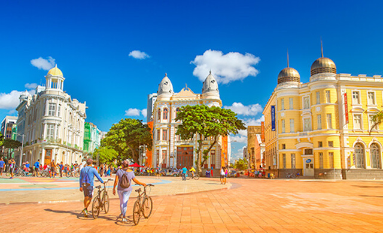
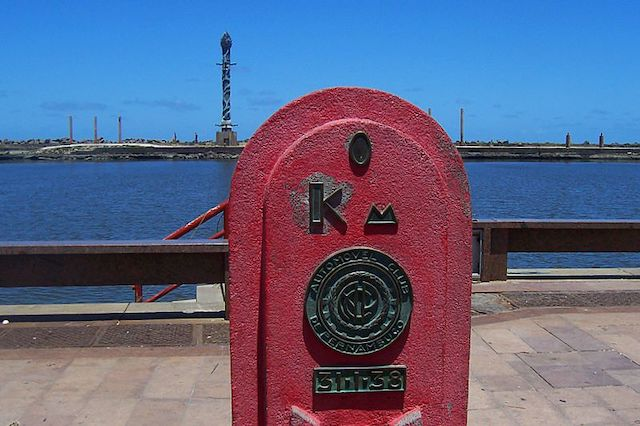
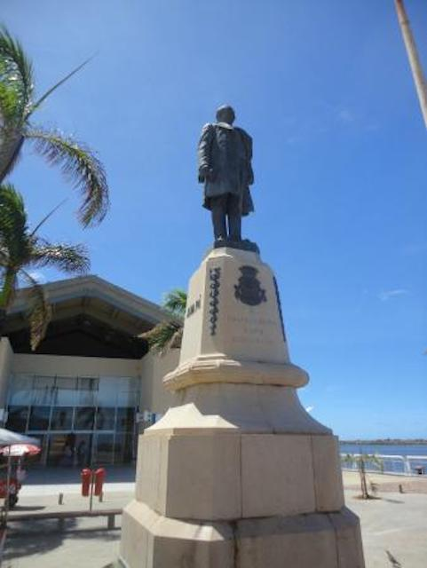
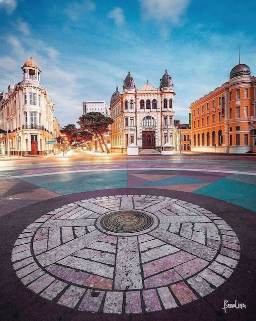

Bem-vindo à nossa página
O que buscamos?
Nossa missão é mostrar as belezas da cidade do Recife, que de tão encantadora torna-se um destino obrigatório para quem quer conhecer o melhor que o Brasil tem a oferecer.
Destaque da semana
Marco Zero
Antes de entrarmos nos encantamentos da cidade, vamos explicar o significado de Marco Zero. Esse nome identifica o local de origem de uma cidade, ou de sua fundação. Para marcar tal evento, em sua maioria, foram instalados monumentos para que a população pudesse sempre visualizar parte da história da sua cidade.
Com essa definição em mente, vamos mostrar o Marco Zero de Recife, que se situa na Praça Barão de Rio Branco.

Praça Barão do Rio Branco
Conhecida como praça do marco zero, o local é parte da região histórica do Recife antigo, a partir do qual se inicia a medição das distâncias das estradas da cidade.
A sua instalação data de 31 de janeiro de 1938, simbolizada por um marco de cor vermelha doado para a cidade pelo Clube do Automóvel.

O Barão do Rio Branco, que dá nome à praça, está também representado no local por uma estátua de 2,8 metros, feita em bronze pelo escultor francês Félix Charpentier.

Em 1999, o local recebeu algumas alterações, como o deslocamento da estátua do Barão e do marco vermelho para a borda da praça.
No seu centro foi então instalada uma placa redonda, projetada pelo pintor Cícero Dias. Inspirada na sua obra "Eu vi o mundo e ele começava no Recife", o grande círculo remete a uma Rosa dos Ventos, e tem em média 10 metros de raio.
